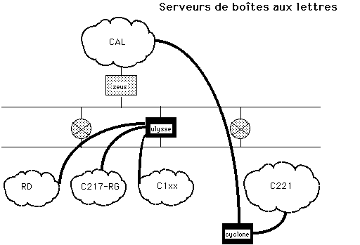
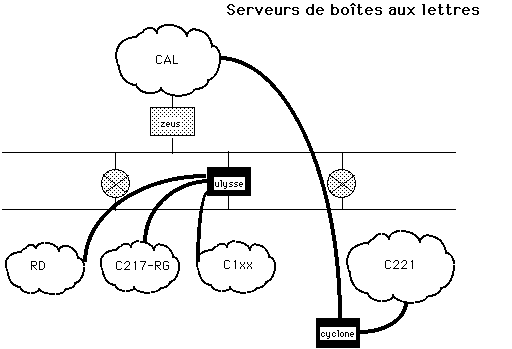

Sendmail
- Principe : agent MTA
- aiguillage du mail selon son adresse dans le champ To:
- délivrance du mail selon son adresse dans le champ From:
- réécriture de l'adresse sous forme canonique
- détermination du triplet (mailer, relai, user)
- Fichiers
- /etc/sendmail.cf
- /var/spool/mail/
- /var/spool/mqueue/
- /etc/aliases
- ~/.forward
- Commandes
- /usr/lib/sendmail -bd -q1h (lancement du daemon smtp)
- /usr/lib/sendmail -q (reprocessing des queues)
- /usr/lib/sendmail -bt (tests des règles)
- mailq (lister les queues)
- mail -v user
- telnet host smtp
 

 Retour au Plan
Philippe Dax / dax@inf.enst.fr
Retour au Plan
Philippe Dax / dax@inf.enst.fr